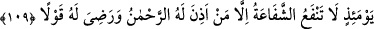
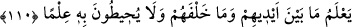

Onun ardına bir namussuz gibi düşer miydi hiç?
Hemencecik ayağını çeker, kurtulurdu!
Sığır kasapların ne yapacağını bilseydi
Hiç onların peşine düşer, dükkâna gider miydi?
Yâhut ellerinden kepek yer miydi...
Ya da onların yüze gülücüğüne aldanır onlara süt verir miydi?
Hattâ ot yese bile, neden beslendiğini bilseydi,
Hiç o otu hazmedebilir miydi?
Sen, bir işe el atar, o işe iyice sarılırsın...
O işteki ayıp ve noksan o anda sana örtülüdür.
Sana o fikirdeki ayıp ve kusur belli olsaydı ondan kaçardın...
Canın, aramda keşke doğu ile batı arası uzaklık olsaydı der!
Nihayet ondan usanır, pişman olursun ya...
Bu hal, evvel olsaydı hiç ona koşar mıydın?
109. O gün, Rahmân’ın izin verdiği ve sözünden hoşlandığından başkasının
şefaati fayda vermez.
“O gün”, yani zikredilen korkunç işlerin ortaya çıktığı gün “Rahmân’ın” şefâat
etmesine “izin verdiği ve sözünden hoşlandığından” o kimse için şefâat edenin
sözünden râzı olduğundan “başkasının şefâati fayda vermez.”
İmam Râgıb şöyle der: “Şefâat, bir kimseye yardımcı olarak ve onun adına talebde
bulunmak üzere başkasının yanında yer almak demektir. Çoğunlukla mertebesi yüksek
olanın kendisinden daha aşağı olanın yanında yer alması anlamında kullanılır. Nitekim
kıyamet günündeki şefâat de bu kabildendir.
Bir konuda ‘izin’, onu yapabileceğini muhâtaba bildirmek ve yapması husûsunda
ruhsat vermektir.
Her ne kadar insanlara şefâat etmek için yeltenen bazı kimselerin şefâat edecekleri
farz olunsa da Allâh’ın sözünden hoşlandığı kimsenin dışındakilerin şefâati neredeyse
ona hiç fayda vermez. Nitekim Allah Teâlâ şöyle buyurmuştur: “Artık onlara,
şefâatçilerin şefaâti fayda vermez.” (el-Müddessir, 74/48)
110. O, insanların geleceklerini de geçmişlerini de bilir. Onların ilmi ise bunu
kapsayamaz: